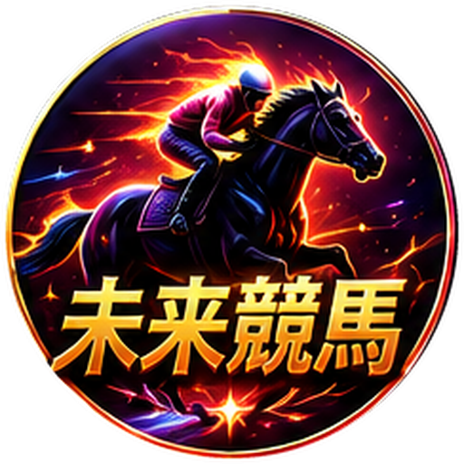

ゲートが開く。地響き。土煙。最終直線、あなたが選んだ一頭が、外から一気に伸びてくる——。この瞬間のために、私たちは予想する。競馬はギャンブルであると同時に、データと想像力がぶつかる、最高に知的なエンターテインメントだ。
血統、前走、脚質、馬場、展開、そしてオッズ。無数の要素が絡み合い、たった一つの結果へと収束する。その"読み"が当たったときの快感は、他の何にも代えがたい。逆に、あと一歩で外したときの悔しさもまた、次へと駆り立てる。あなたも、その魔力に取り憑かれた一人ではないだろうか。
けれど、正直に言おう。その"読み"を極めるのは、あまりにも大変だ。過去のレース結果、血統表、調教タイム、騎手の相性、コースごとの傾向……。全部を追いかけようとすれば、一日が何時間あっても足りない。仕事や生活の合間に、そこまで手が回る人は、そう多くない。「もっと深く読みたいのに、時間が足りない」——その壁に、あなたもぶつかっているはずだ。
血統・成績・馬場・展開・オッズ。読むべき情報は膨大で、人間が全部を頭に入れるのは不可能。結局、一部の情報だけで判断してしまう。
本気で分析すれば1レースに何十分も。全レースを深く読むなんて、現実的じゃない。気づけば「なんとなく」で買っている。
好きな馬、前回の負けを取り返したい気持ち。人間の予想は、どうしても感情に揺さぶられる。冷静な判断が、いちばん難しい。
この3つの壁を、たった一つの"専用機"で越えていく。それが、未来競馬だ。
人間が一生かけても読み切れない量のデータを、AIは一瞬で。しかも、感情に一切左右されずに。
過去のレース結果、血統、脚質、馬場状態、コース適性、オッズの動き——。人間なら何時間もかかる分析を、AIが瞬時に横断。「見落とし」という概念が、そもそも存在しない。あなたが見逃していた一頭を、AIは見つけ出す。
「人気だから」「好きだから」——そんな主観をAIは持たない。データが示す事実だけを、冷徹に評価する。だからこそ、人気の盲点や、みんなが見落とす"妙味のある一頭"を、静かに浮かび上がらせる。
ただ「この馬」と言うだけじゃない。なぜその馬なのか——展開、適性、データの裏付けを、分かりやすく提示する。AIの予想を鵜呑みにするのではなく、あなた自身の"読み"を深める材料になる。ブラックボックスじゃない、対話できる予想だ。
未来競馬のAIは、結果を学び続ける。予想と実際のズレを取り込み、精度を磨いていく。今日より明日、明日より明後日。あなたと一緒に成長していく、育てる予想パートナーだ。
※ 数値はサービスの特性を表すイメージです。AIの予想は的中を保証するものではありません。
気になるレースをタップ。今日の全レースから。
予想と、その根拠を分かりやすく表示。
提案をヒントに、自分の一点を決める。
的中も、悔しさも記録。次の読みへ。
難しいデータ画面と、にらめっこする必要はない。未来競馬は、専門的な情報も"誰でも分かる形"に整えて見せる。競馬をこれから始める人も、何十年のベテランも、同じ熱量で楽しめる。それが「AIを、あなたの専用機に。」というSWAN WORKSの約束だ。
未来競馬は、単なる予想ツールじゃない。競馬という趣味を、まるごと深く味わうための"体験"を届ける。
あなたの予想 vs AIの予想。どちらが読み切れるか勝負する楽しみ。負けても悔しい、勝てば最高に気持ちいい。
的中率も回収率も、すべて記録。自分の"読みのクセ"が見えてくる。勝ち方が、データで分かる。
次はどのレースを読もう。AIはどう見ているだろう。日曜の朝が、ちょっと特別な時間になる。
「自分の予想に、AIという"もう一つの視点"が加わる。答え合わせみたいで、読みがどんどん鋭くなる感覚が最高だ」
「全レースを深く分析する時間なんてない。でもAIが要点を整えてくれるから、短い時間でも"ちゃんと読んだ"満足感がある」
「専門用語だらけで挫折しそうだった。未来競馬は"なぜこの馬か"まで教えてくれるから、遊びながら競馬が分かってきた」
未来競馬は月額のサブスクリプション。導入費や初期費用は0円。合わなければ、いつでも解約できる。
※ 料金プランの詳細は現在準備中です。先行案内にご登録の方から、いち早くお知らせします。
未来競馬は、競馬という最高のエンターテインメントを、もっと深く楽しむための"データ分析・予想支援"の道具です。AIは強力な相棒ですが、魔法ではありません。予想の的中を保証するものではなく、未来を確実に当てることは誰にもできません。
馬券の購入は、必ずご自身の判断と責任のもとで、無理のない範囲でお楽しみください。生活を脅かすような使い方は絶対にしないでください。競馬はあくまで余暇の娯楽です。のめり込みすぎていると感じたら、立ち止まる勇気を。20歳未満の方は投票券を購入できません。未来競馬は、あなたが競馬を"末永く、健全に"楽しむことを、心から願っています。
SWAN WORKSは「たのしみを、増やす」ことを大切にしています。だからこそ、勝ち負けだけに飲み込まれるのではなく、"読む楽しさ""予想する高揚感"そのものを味わってほしい。未来競馬は、その健全な熱狂に、静かに寄り添う存在でありたいと考えています。
はい。むしろ初心者の方にこそ使ってほしいツールです。専門的なデータも「なぜこの馬なのか」まで分かりやすく提示するので、遊びながら競馬の見方が自然と身についていきます。
AIは膨大なデータをもとに予想を提示しますが、的中を保証するものではありません。競馬に「絶対」はありません。未来競馬は"当てる魔法"ではなく、あなたの予想を深め、競馬をより楽しむための相棒だとお考えください。
はい。スマホから手軽にレースを選び、AIの予想を見て、買い目を検討できます。難しい設定は不要です。
未来競馬は、予想の"根拠"まで開示します。AIの見立てをヒントに、最後はあなた自身が判断する——その過程こそが、競馬の醍醐味です。丸投げではなく、一緒に読む相棒として設計しています。
無料プランからお試しいただけます。有料プランの詳細は現在準備中で、先行案内にご登録の方から順にお知らせします。いつでも解約できます。
未来競馬は現在開発中で、近日デビュー予定です。一番乗りで使いたい方は、先行案内にご登録ください。

勘と経験に、AIの眼を。未来競馬は近日デビュー。
一番乗りでその実力を試したい方へ、先行案内をお届けします。